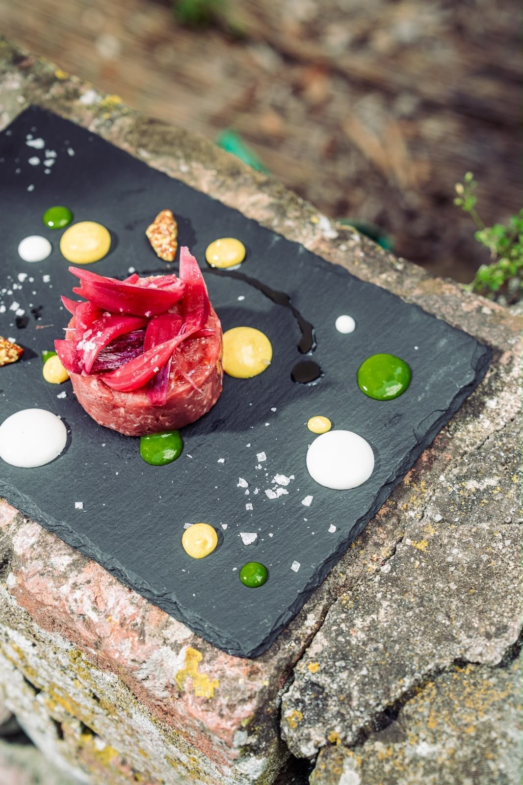

Homemade
every day
Our story
A new life, the same passion : a warm welcome
Giulivo was born from Guidino's desire to bet everything on his true passion : generous, sincere Tuscan cuisine. After an eventful life, he chose to start from scratch and open his own table in Vicopisano, honouring traditional recipes and seasonal produce.
Here everything is homemade : the pasta is worked by hand, the meat and fish cooked with care, the desserts prepared on site. People come to eat well, but also for the buonumore — good mood — that gives the house its name.
- Handmade fresh pasta
- Seasonal meat & fish
- Homemade desserts
- Simple, warm and welcoming atmosphere
Guidino